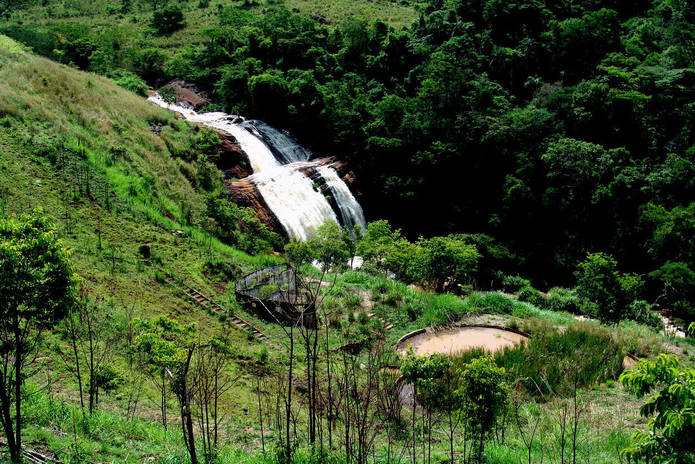

<!DOCTYPE html>
<html lang="pt-br">
</html>
<title>Cascata Véu da Noiva</title>
    <meta charset="UTF-8">
    <meta http-equiv="X-UA-Compatible" content="IE=egde">
    <meta name="viewport" content="width=device-width, initial-scale=1.0 ">
    <link rel="stylesheet" href="index.css">
 </head>

<body>
    <header>
        <div class="center">
          </img>
        </div>
        <h1>Cascata Véu da Noiva</h1>
      </header>
<main>
<section>
<p>
    A Cascata Véu da Noiva é uma das mais belas e emblemáticas atrações naturais de Ribeirão Claro, Paraná. Sua história está intimamente ligada ao desenvolvimento turístico e cultural da região.

Localizada em meio a uma paisagem deslumbrante, a cascata recebeu esse nome devido à sua aparência, que se assemelha a um véu de noiva com suas águas brancas e delicadas caindo suavemente de uma grande altura. Este cenário encantador sempre atraiu a atenção de moradores e visitantes, tornando-se um símbolo da beleza natural de Ribeirão Claro.

A descoberta da Cascata Véu da Noiva remonta aos tempos dos primeiros colonizadores, que desbravaram a região em busca de terras férteis e novas oportunidades no final do século XIX e início do século XX. Desde então, a cascata tornou-se um local popular para lazer e contemplação, oferecendo um refúgio tranquilo e pitoresco.

Ao longo dos anos, o acesso à Cascata Véu da Noiva foi melhorado, permitindo que um número crescente de turistas pudesse visitar e desfrutar desse magnífico espetáculo natural. As trilhas que levam à cascata são rodeadas por vegetação exuberante, proporcionando uma experiência imersiva na natureza.

A cascata não apenas destaca-se por sua beleza, mas também pelo seu valor ecológico. Ela é parte integral do ecossistema local, contribuindo para a biodiversidade da região e oferecendo um habitat para várias espécies de flora e fauna.

Atualmente, a Cascata Véu da Noiva é um ponto turístico de destaque em Ribeirão Claro, atraindo visitantes que buscam contato com a natureza, aventura e momentos de paz. O local é ideal para atividades como caminhadas, piqueniques e fotografia, além de ser um ponto de encontro para aqueles que apreciam a serenidade e a majestade das quedas d'água.

A história da Cascata Véu da Noiva é uma celebração da natureza e da herança cultural de Ribeirão Claro, simbolizando a harmonia entre o desenvolvimento humano e a preservação ambiental. Ela continua a ser um tesouro natural que encanta e inspira todos que a visitam.
</p>
</section>
</main>


</body>